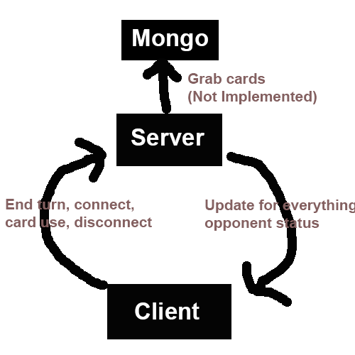

To recreate an analog board game that we’re working on in production studio in a web game, where players can matchup versus each other, play cards, and play until completion of the game.
Our project uses Mongo, Node.js, and socket.io to support a server that provides a client for the game. On server side, rooms will take up to two clients since the game is two player. When more clients attempt to join, the server creates more rooms to hold them in rooms of two users. The server also generates a shuffled deck for each user, and when players begin their turn in game the server gives information about the card they drew to begin the turn.
The client displays the hand of the user, without having access to their deck to avoid cheating. When a player begins their turn, they draw a card, shown by the server to them alone. The opponent can see the number of cards in the opponent’s hand. The UI displays the cards in the user’s hand, the total number of cards in hand, the number of cards in the opponent’s hand, whose turn it is, and the 7x5 board containing all the cards placed onto it. Each card is colored, green shows cards that the viewing user placed, and red shows cards the opponent placed.
Players draw cards upon starting the turn, and can play cards from their hand. When done, they can end their turn and their opponent gets to take their turn. The full gameplay of our board game is not shown in our game. The full game rules are not implemented, but the core of card placement and card handling is functional.
We completed a game that handles the technical requirements of the project while needing some improvement in the full implementation of the board game it’s based on, including card effects, card combat, and movement.
We decided to use Mongo DB for the project to store the cards that the player would have access to so that the client side wasn't bogged down with all of the info. The server would send the cards that the player needed to know about to the client and the client was supposed to load the images from their local computer when they got the card, this makes the server lightweight and fast so it doesn't have to hold and transfer such large images and the player will only know about the cards that it should know about to prevent cheating. We also decided to not use an MVC architecture for the project because it didn't make sense because we were only ever on one page and all of the extra overhead of making the MVC architecture would have been wasted.
The server code and UI code went well and we were keeping all of the necessary info secret that we needed, the room joining code also work well so that you could only have two people in a room. What didn't go well though is trying to disconnect and destroy rooms when everyone leaves, Wes had to create an entire new room system to get correct support for player disconnects and room destruction. Clearly all of the features that didn't make it into the project didn't go well. If we could do it again we would start much sooner and lower the scope of what we wanted the final project to be.

We liked doing the server code for this project and we was interested in getting stuff working for Mongo DB, but that didn't happen unfortunately.
My game is a digital adaptation of an analog game currently being developed in a team in Production Studio. Currently, our team has 2 people working on this digital adaptation: Westley Waligora and Peter McNamara.
Our game is a strategic card game where you and an opponent play cards on a board.
Players have a deck, a graveyard, and their cards on the battlefield.
This game is a two player game. The mechanics of the game is that the player will be able to draw from a deck, play cards on the board, activate card abilities, move cards, and attack with cards. Players can play their cards and spawn units in their home zone and move them around the board and onto mana springs which give the players mana to play more cards with. Each player will also have a leader that if that unit dies then that player loses the game. There are also multiple different mechanics that the cards can have like doing something while it is on a mana spring, doing something when a nearby unit dies, or allowing units to spawn nearby another unit instead of in the spawn zone.
We aim to make user experience great and give each player quick access to cards in hand and on the board. There will also be a text box that shows the descriptions of each card so that people don't have to read the text on the cards and can instead just read them from the text box. Whenever a player wants to move or attack the game will automatically highlight the applicable targets so that players don't have to remember the rules as much.
This game is a multi-user system because there will be two players that play together on a server. The server will also hold more than just one game at a time. This game will not support user accounts since there is no data that would need to be worth making player accounts for. We also just don't want to go through the trouble of supporting this. The game will only support players playing their current game, there is no overall metagame like leaderboards or anything like that.
We will be using NODE.js, HTML, CSS, and JavaScript for both client and server side programming, possibly more. The client will render the images for the board and the cards, but will not have any information about the other player. The client will also gather player input and pass it along to the server.
The server will hold the entire game state, this includes the current board, each players' hands and decks, and it will do any of the game logic that needs to be done. It will also have a timer for turn times. The server will only pass on public knowledge to each player, the server will pass the info for the board and for the players hand whose hand it is.
We will be using MongoDB as a database to store and access all of the cards that we will be using. We will also be using NODE.js as a framework
We won't be storing any data about a user's card collection because there is none, there are 6 prebuilt decks in the analog version and a smaller amount in this version. We're going to begin with a prototype deck for debugging reasons, then recreate decks from the analog game.
The cards of the game will be handled by MongoDB and we will store each card as a Model in the DB with a name, health, attack, and other important things.
At the beginning of the game, each player places their leader in the backmost row of the battlefield and draws a hand of cards. If they wish, they can take a "mulligan", which in our game is taking any number of cards in hand and putting them back into the deck, shuffling, and drawing that many cards. This can only be done once.
Normal units have an attack value and a health value. Units can move 2 spaces (not diagonally) and attack units in the 8 spaces surrounding them. Units die if they take more damage than they have health, and you win when you destroy your opponent's leader.
The analog game has 3 kinds of leaders with different rules, and 6 factions. We plan to begin with only 2 factions with the same leader type to simplify the digital game, which is meant only to be a demo for the analog game.
The game will mostly be mouse controlled with the mouse clicking on different cards and buttons to advance the game.